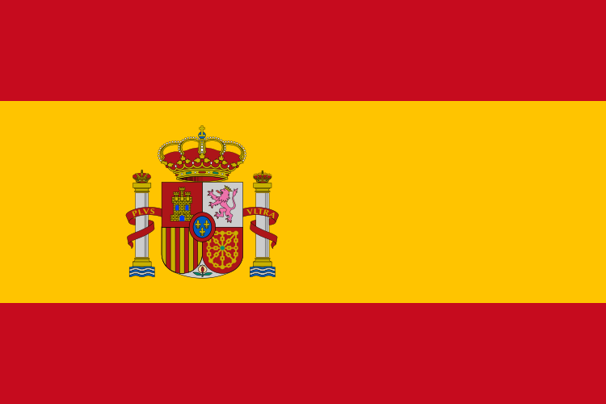
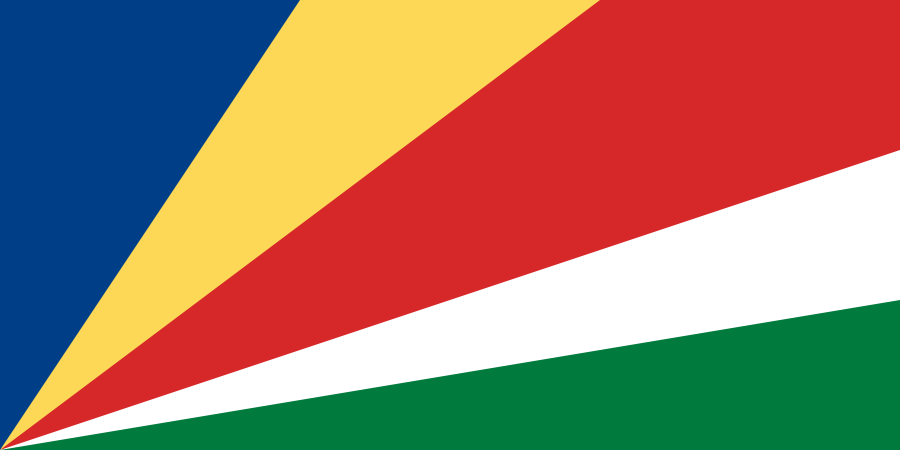
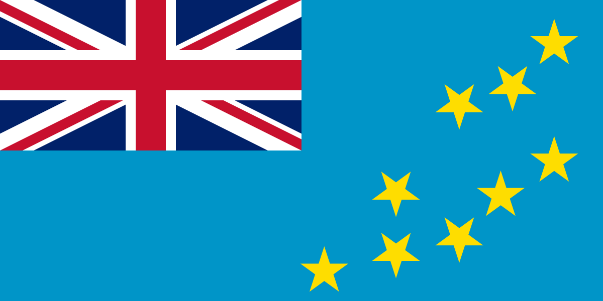
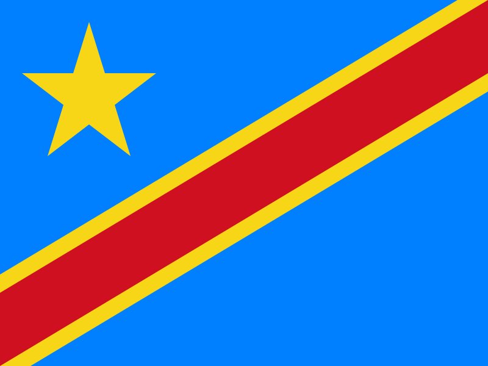

No.
Country
Capital
Wiki
Flag
1
India
New Delhi
https://en.wikipedia.org/wiki/India
2
United States of America
Washington, D.C.
https://en.wikipedia.org/wiki/United_States
3
Mexico
Mexico City
https://en.wikipedia.org/wiki/Mexico
4
Austria
Vienna
https://en.wikipedia.org/wiki/Austria
5
Spain
Madrid
https://en.wikipedia.org/wiki/Spain

6
Nigeria
Abuja
https://en.wikipedia.org/wiki/Nigeria
7
Japan
Tokyo
https://en.wikipedia.org/wiki/Japan
8
Ethiopia
Addis Ababa
https://en.wikipedia.org/wiki/Ethiopia
9
Saudi Arabia
Riyadh
https://en.wikipedia.org/wiki/Saudi_Arabia
10
Seychelles
Victoria
https://en.wikipedia.org/wiki/Seychelles

11
Namibia
Windhoek
https://en.wikipedia.org/wiki/Namibia
12
Ukraine
Kyiv
https://en.wikipedia.org/wiki/Ukraine
13
Tuvalu
Funafuti
https://en.wikipedia.org/wiki/Tuvalu

14
Denmark
Copenhagen
https://en.wikipedia.org/wiki/Denmark
15
Botswana
Gaborone
https://en.wikipedia.org/wiki/Botswana
16
France
Paris
https://en.wikipedia.org/wiki/France
17
Democratic Republic of the Congo
Kinshasa
https://en.wikipedia.org/wiki/Democratic_Republic_of_the_Congo

18
United Arab Emirates
Abu Dhabi
https://en.wikipedia.org/wiki/United_Arab_Emirates
19
Chile
Santiago
https://en.wikipedia.org/wiki/Chile